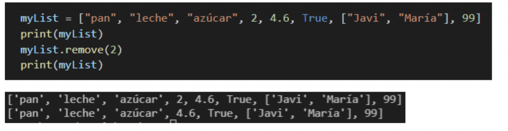
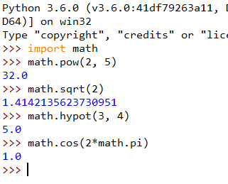

HTML y Python
HTML, acrónimo en inglés de HyperText Markup Language, hace referencia al lenguaje de marcado utilizado en la creación de páginas web
1.HTML
Los encabezados van desde <h1>
hasta <h6>
2. Python
Es un lenguaje de alto nivel interpretado

5. Listas
Ejemplo de una lista con temas de Python:
- Variables y Tipos de Datos
- Estructuras de Control
- Funciones
- Clases y Objetos

6. Tablas
Ejemplo de una tabla con funciones matemáticas en Python:
| Función |
Descripción |
abs(x) |
Valor absoluto de x |
pow(x, y) |
x elevado a la potencia y |
round(x) |
Redondea x al entero más cercano |

7. Formularios
Los formularios permiten la interacción con el usuario:

8. Imágenes y Multimedia
Se pueden agregar imágenes y videos a las páginas web.
Curriculum

Sofia Gonzalez Pradenas
Ing. en Informática